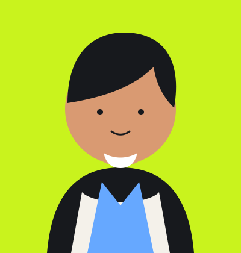

SIGNAL ROUTING
Connect the source
SOURCEDESTINATION
Path is currently unverified.
01 / ABOUT

THE STORY SO FAR
I am a student interested in how technology can solve real problems and make information easier to use. My work spans web development, team activities, and hands-on experiments with technology.
SIGNAL ROUTING
Path is currently unverified.
COMPANION SEQUENCE
Sequence ready.
EDUCATION
Current academic background and verified qualifications can be maintained in the centralized profile source.
ACTIVITIES
Projects, experiments, and collaborative experiences are presented here independently of the interactive world.
NEXT